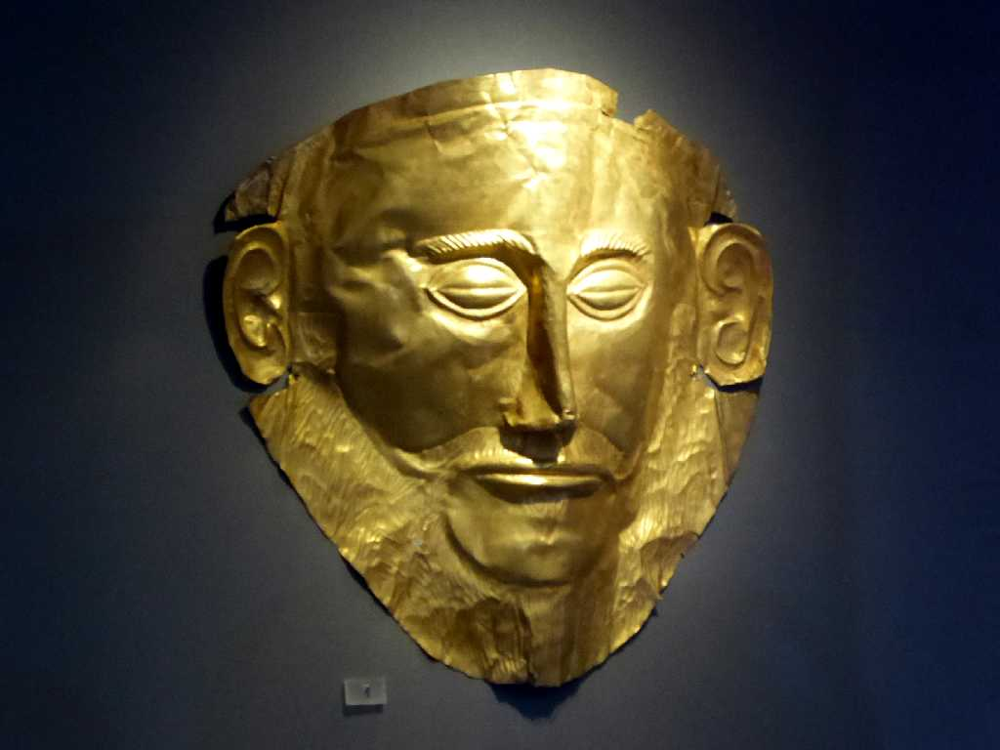
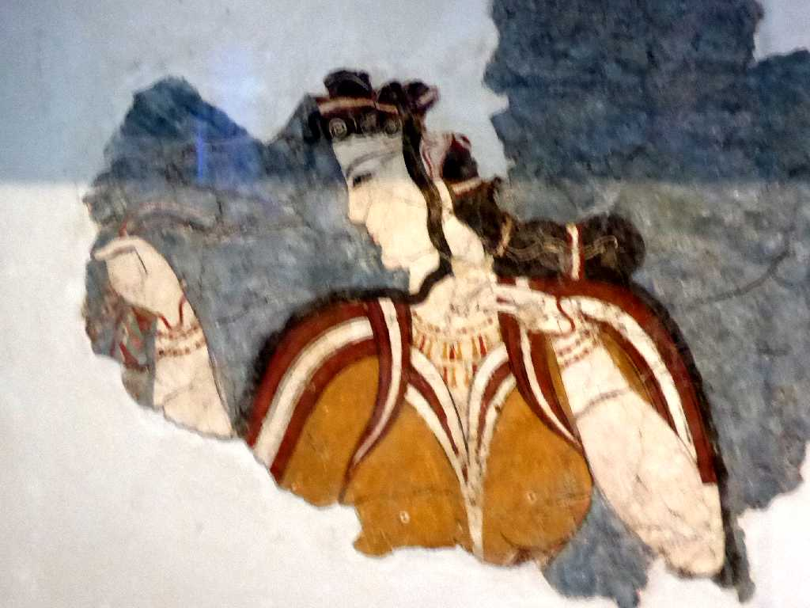

Mask of Agamemnon Mycenae National Archaeological Museum of Athens
学生時代以来５０年ぶりの博物館再訪問で今回観たミケーネ文明の遺跡群からハインリヒシュリーマンにより発見された葬儀に用いられたアガメムノンのマスク

Lady of Mycenas Mycenae National Archaeological Museum of Athens
ミケーネの貴婦人 紀元前１３世紀頃のフレスコ画
Fresco Akrotiri National Archaeological Museum of Athens
サントリーニ火山噴火前の岩に美しいユリの花が描かれている